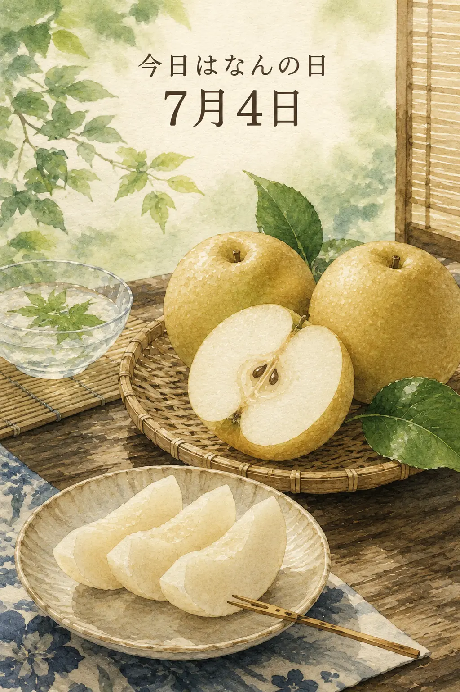

7月4日は「梨の日」。鳥取県の東郷町（現在の湯梨浜町）の二十世紀梨を大切にする町づくり委員会が、2004年に定めた記念日です。7を「な」、4を「し」と読む言葉合わせにちなみ、産地では豊作を願う取り組みが続けられています。
梨の魅力は、みずみずしさと軽やかな歯ざわり。料理の後にいただく水菓子にも、季節を映す果物として親しまれます。品種によって出回る時期が違うため、記念日の7月4日を、すべての梨が旬を迎える日と捉えるものではありません。
果物の名前にまつわる日から、育てる人や産地の思いにも目を向けて。季節の味わいとともに、心ほどけるひとときをお過ごしください。
出典：JA鳥取中央「梨の日」豊作願う ／ 梼原町立図書館「7月4日は梨の日」（2026年10月22日確認）。
7月4日付の保存画像を再掲し、本文は出典に基づいて再編集しました。料理の提供・入荷・在庫や当日の営業を示す記事ではありません。